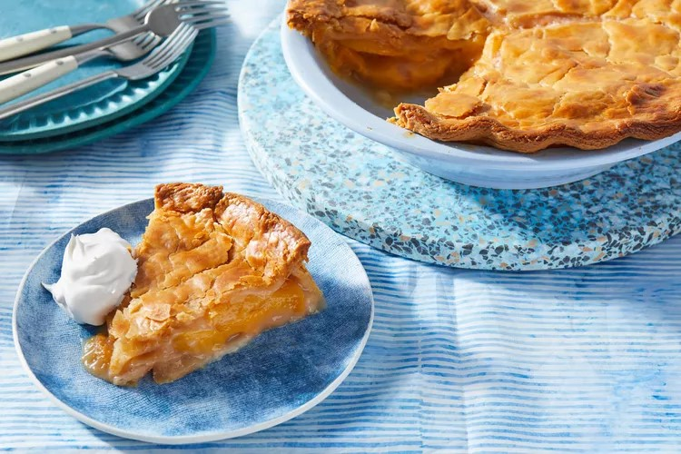

|

|
Crust:
- 2 2/3 cups all-purpose flour
- 2 teaspoons sugar
- 3/4 teaspoon kosher salt
- 1 stick (4 ounces) cold unsalted butter, cut into 1/2-inch pieces
- 1/2 cup plus 1 tablespoon (4 ounces) cold solid vegetable shortening
- 1/2 cup ice water
Filling:
- 8 large, ripe but firm peaches (3 1/2 pounds)
- 3/4 cup sugar
- 1 1/2 tablespoons fresh lemon juice
- 1/4 cup plus 1 tablespoon all-purpose flour
- 1 1/2 tablespoons unsalted butter, thinly sliced
- Egg wash made with 1 egg yolk mixed with 2 tablespoons water
Bourbon Whipped Cream:
- 1 cup heavy cream, chilled
- 1 tablespoon bourbon
- 1/2 teaspoon sugar
- 1/4 teaspoon pure vanilla extract
|
Dough
- In a food processor, pulse the flour with the sugar and salt until combined. Add the butter and shortening and pulse until the mixture resembles coarse meal.
- Transfer the mixture to a large bowl and sprinkle the ice water on top. Stir with a fork until a crumbly dough forms.
- Turn the dough out onto a work surface and knead two or three times, just until the dough comes together.
- Cut the dough in half and form into two disks; wrap in plastic and refrigerate until firm, at least 30 minutes or overnight.
- On a lightly floured surface, roll out each disk of dough into a 12-inch round. Ease one of the rounds into a 9-inch glass pie plate and transfer the other round to a baking sheet. Refrigerate the dough.
Filling
- Preheat the oven to 400°F. Bring a large saucepan of water to a boil and fill a large bowl with ice water. Using a sharp knife, mark a shallow X in the bottom of each peach.
- Blanch the peaches in the boiling water for about 1 minute, until the skins begin to loosen.
- Using a slotted spoon, transfer the peaches to the ice water to cool.
- Drain and peel the peaches; cut them into 3/4-inch wedges.
- Transfer the peaches to a large bowl. Add the sugar, lemon juice, and flour; toss well and let stand for 5 minutes.
Assemble
- Pour the peaches and their juices into the chilled pie shell and scatter the butter slices on top.
- Brush the edge of the pie shell with the egg wash and lay the round of dough from the baking sheet on top. Press the edges of the pie shell together to seal and trim the overhang to 1/2 inch. Fold the edge of the pie dough under itself and crimp decoratively. Brush the remaining egg wash on the top crust and cut a few slits for venting steam.
- Transfer the pie to the oven and place a baking sheet in the bottom to catch any drips. Bake for 30 minutes.
- Reduce the oven temperature to 375°F, cover the edge of the pie with foil, and bake for about 40 minutes longer, until the filling is bubbling and the crust is deeply golden on the top and bottom.
- Transfer the pie to a rack to cool completely before serving.
Making the Whipped Cream
- Using an electric mixer, beat heavy cream, bourbon, sugar, and vanilla together in a large bowl until the cream is softly whipped. Serve with pie.
Important Notes:
- The dough can be refrigerated for up to 2 days or frozen for up to 1 month. The peach pie can be stored overnight at room temperature.
- As an alternative to the Bourbon Whipped Cream, serve the pie with vanilla ice cream.
|